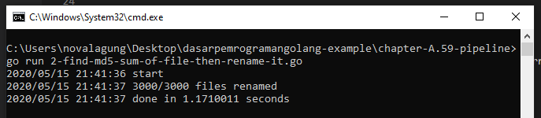

A.62. Concurrency Pattern: Pipeline
Kita sudah membahas beberapa kali tentang topik concurrency atau konkurensi di Go programming. Pada chapter ini kita akan belajar salah satu best practice konkurensi dalam Go, yaitu teknik pipeline, yang merupakan satu di antara banyak concurrency pattern yang ada di Go.
Go memiliki beberapa API untuk keperluan konkurensi, dua diantaranya adalah goroutine dan channel. Dengan memanfaatkan APIs yang ada kita bisa membentuk sebuah streaming data pipeline yang benefitnya adalah efisiensi penggunaan I/O dan efisiensi penggunaan banyak CPU.
A.62.1. Konsep Pipeline
Definisi pipeline yang paling mudah versi penulis adalah beberapa/banyak proses yang berjalan secara konkuren yang masing-masing proses merupakan bagian dari serangkaian tahapan proses yang berhubungan satu sama lain.
Analoginya seperti ini: bayangkan sebuah flow proses untuk auto backup database secara rutin, yang mana database server yang perlu di-backup ada banyak. Untuk backup-nya sendiri kita menggunakan program Go, bukan shell script. Mungkin secara garis besar serangkaian tahapan proses yang akan dijalankan adalah berikut:
- Kita perlu data list dari semua database yang harus di-backup, beserta alamat akses dan kredensial-nya.
- Kita jalankan proses backup, bisa secara sekuensial (setelah
db1selesai, lanjutdb2, lanjutdb3, dst), atau secara paralel (proses backupdb1,db2,db3, dan lainnya dijalankan secara bersamaan). Di masing-masing proses backup database sendiri ada beberapa proses yang dijalankan:
- A. Lakukan operasi dump terhadap database, outputnya berupa banyak file disimpan ke sebuah folder.
- B. File-file hasil dump kemudian di-archive ke bentuk
.zipatau.tar.gz(misalnya). - C. File archive di-kirim ke server backup, sebagai contoh AWS S3.
Kalau diperhatikan pada kasus di atas, mungkin akan lebih bagus dari segi performansi kalau proses backup banyak database tersebut dilakukan secara parallel.
Dan akan lebih bagus lagi, jika di masing-masing proses backup database tersebut, proses A, B, dan C dijalankan secara konkuren. Dengan menjadikan ketiga proses tersebut (A, B, C) sebagai proses konkuren, maka I/O akan lebih efisien. Nantinya antara proses A, B, dan C eksekusinya akan tetap berurutan (karena memang harus berjalan secara urut. Tidak boleh kalau misal B lebih dulu dieksekusi kemudian A); akan tetapi, ketika goroutine yang bertanggung jawab untuk eksekusi proses A selesai, kita bisa lanjut dengan eksekusi proses B (yang memang next stage-nya proses A) plus eksekusi proses A lainnya (database lain) secara paralel. Jadi goroutine yang handle A ini ga sampai menganggur.
Silakan perhatikan visualisasi berikut. Kolom merupakan representasi dari goroutine yang berjalan secara bersamaan. Tapi karena ketiga goroutine tersebut merupakan serangkaian proses, sehingga eksekusinya harus secara berurut. Sedangkan baris/row representasi dari sequence atau urutan.
| sequence | pipeline A | pipeline B | pipeline C |
|---|---|---|---|
| 1 | db1 | - | - |
| 2 | db2 | db1 | - |
| 3 | db3 | db1 | - |
| 4 | db4 | db2 | db1 |
| 5 | db5 | db3 | db2 |
| 6 | db5 | db4 | db3 |
| 7 | db6 | db5 | db4 |
| ... | ... | ... | ... |
Di Go, umumnya proses yang berupa goroutine yang eksekusinya adalah concurrent tapi secara flow adalah harus berurutan, itu disebut dengan pipeline. Jadi untuk sementara anggap saja pipeline A sebuah goroutine untuk proses A, pipeline B adalah goroutine proses B, dst.
Untuk mempermudah memahami tabel di atas silakan ikuti penjelasan beruntun berikut:
- Sequence 1: pipeline A akan melakukan proses dump dari dari
db1. Pada waktu yang sama, pipeline B dan C menganggur. - Sequence 2: proses dump
db1telah selesai, maka lanjut ke next stage yaitu proses archive data dumpdb1yang dilakukan oleh pipeline B. Dan pada waktu yang sama juga, pipeline A menjalankan proses dumpdb2. Pipeline C masih menganggur. - Sequence 3: pipeline A menjalankan proses dump
db3. Pada waktu yang sama pipeline B belum menjalankan proses archivingdb2yang sudah di-dump karena archivingdb1masih belum selesai. Pipeline C masih menganggur. - Sequence 4: proses archiving
db1sudah selesai, maka lanjut ke next stage yaitu kirim archive ke server backup yang prosesnya di-handle oleh pipeline C. Pada saat yang sama, pipeline B mulai menjalankan archiving data dumpdb2dan pipeline A dumpingdb4. - ... dan seterusnya.
Pada contoh ini kita asumsikan pipeline A adalah hanya satu goroutine, pipeline B juga satu goroutine, demikian juga pipeline C. Tapi sebenarnya dalam implementasi real world bisa saja ada banyak goroutine untuk masing-masing pipeline (banyak goroutine untuk pipeline A, banyak goroutine untuk pipeline B, banyak goroutine untuk pipeline C).
Semoga cukup jelas ya. Tapi jika masih bingung, juga tidak apa. Kita sambil praktek juga, dan bisa saja pembaca mulai benar-benar pahamnya saat praktek.
Penulis sarankan untuk benar-benar memahami setiap bagian praktek ini, karena topik ini merupakan pembahasan yang cukup berat untuk pemula, tapi masih dalam klasifikasi fundamental kalau di Go programming. Bingung tidak apa, nanti bisa di-ulang-ulang, yang penting tidak sekadar copy-paste.
A.62.2. Skenario Praktek
Ok, penjabaran teori sepanjang sungai nil tidak akan banyak membawa penjelasan yang real kalau tidak diiringi dengan praktek. So, mari kita mulai praktek.
Untuk skenario praktek kita tidak menggunakan analogi backup database di atas ya, karena untuk setup environment-nya butuh banyak effort. Skenario praktek yang kita pakai adalah mencari md5 sum dari banyak file, kemudian menggunakan hash dari content-nya sebagai nama file. Jadi file yang lama akan di-rename dengan nama baru yaitu hash dari konten file tersebut.
Agar skenario ini bisa kita eksekusi, kita perlu siapkan dulu sebuah program untuk generate dummy files.
A.62.3. Program 1: Generate Dummy File
Buat project baru dengan nama bebas loss gak reweellll beserta satu buah file bernama 1-dummy-file-generator.go.
Dalam file tersebut import dan definisikan beberapa hal, diantaranya:
- Konstanta
totalFileyang isinya jumlah file yang ingin di-generate. - Variabel
contentLengthyang isinya panjang karakter random yang merupakan isi dari masing-masing generated file. - Variabel
tempPathyang mengarah ke temporary folder.
package main
import (
"fmt"
"log"
"math/rand"
"os"
"path/filepath"
"time"
)
const totalFile = 3000
const contentLength = 5000
var tempPath = filepath.Join(os.Getenv("TEMP"), "chapter-A.59-pipeline-temp")
Kemudian siapkan fungsi main() yang isinya statement pemanggilan fungsi generate(), dan beberapa hal lainnya untuk keperluan benchmark performa dari sisi execution time.
func main() {
log.Println("start")
start := time.Now()
generateFiles()
duration := time.Since(start)
log.Println("done in", duration.Seconds(), "seconds")
}
Sekarang siapkan fungsi randomString()-nya:
func randomString(length int) string {
randomizer := rand.New(rand.NewSource(time.Now().Unix()))
letters := []rune("abcdefghijklmnopqrstuvwxyzABCDEFGHIJKLMNOPQRSTUVWXYZ")
b := make([]rune, length)
for i := range b {
b[i] = letters[randomizer.Intn(len(letters))]
}
return string(b)
}
Siapkan fungsi generateFiles()-nya, isinya kurang lebih adalah generate banyak file sejumlah totalFile. Lalu di tiap-tiap file di-isi dengan random string dengan lebar sepanjang contentLength. Untuk nama file-nya sendiri, formatnya adalah file-<index>.txt.
func generateFiles() {
os.RemoveAll(tempPath)
os.MkdirAll(tempPath, os.ModePerm)
for i := 0; i < totalFile; i++ {
filename := filepath.Join(tempPath, fmt.Sprintf("file-%d.txt", i))
content := randomString(contentLength)
err := os.WriteFile(filename, []byte(content), os.ModePerm)
if err != nil {
log.Println("Error writing file", filename)
}
if i%100 == 0 && i > 0 {
log.Println(i, "files created")
}
}
log.Printf("%d of total files created", totalFile)
}
O iya untuk logging pembuatan file saya tampilkan setiap 100 file di-generate, agar tidak mengganggu performa, karena printing output ke stdout atau CMD/terminal itu cukup costly.
Oke, generator sudah siap, jalankan.

Bisa dilihat sebanyak 3000 dummy file di-generate pada folder temporary os, di sub folder chapter-A.59-pipeline-temp.
A.62.4. Program 2: Baca Semua Files, Cari MD5 Hash-nya, Lalu Gunakan Hash Untuk Rename File
Sesuai judul sub bagian, kita akan buat satu file program lagi, yang isinya adalah melakukan operasi baca terhadap semua dummy file yang sudah di-generate, untuk kemudian dicari hash-nya lalu menggunakan nilai hash tersebut sebagai nama untuk file-file baru yang akan dibuat.
Pada bagian ini kita belum masuk ke aspek konkurensi-nya ya. Sabar dulu. Saya akan coba sampaikan dengan penjabaran yang bisa diterima oleh banyak pembaca (termasuk yang masih awam banget).
Siapkan file 2-find-md5-sum-of-file-then-rename-it.go, import beberapa packages dan siapkan definisi variabel tempPath.
package main
import (
"crypto/md5"
"fmt"
"log"
"os"
"path/filepath"
"time"
)
var tempPath = filepath.Join(os.Getenv("TEMP"), "chapter-A.59-pipeline-temp")
Lanjut siapkan fungsi main() dengan isi memanggil fungsi proceed().
func main() {
log.Println("start")
start := time.Now()
proceed()
duration := time.Since(start)
log.Println("done in", duration.Seconds(), "seconds")
}
Isi dari fungsi proceed() sendiri adalah bisnis logic dari aplikasi yang akan kita buat, yaitu membaca file, mencari md5 hash, lalu rename file.
func proceed() {
counterTotal := 0
counterRenamed := 0
err := filepath.Walk(tempPath, func(path string, info os.FileInfo, err error) error {
// if there is an error, return immediatelly
if err != nil {
return err
}
// if it is a sub directory, return immediatelly
if info.IsDir() {
return nil
}
counterTotal++
// read file
buf, err := os.ReadFile(path)
if err != nil {
return err
}
// sum it
sum := fmt.Sprintf("%x", md5.Sum(buf))
// rename file
destinationPath := filepath.Join(tempPath, fmt.Sprintf("file-%s.txt", sum))
err = os.Rename(path, destinationPath)
if err != nil {
return err
}
counterRenamed++
return nil
})
if err != nil {
log.Println("ERROR:", err.Error())
}
log.Printf("%d/%d files renamed", counterRenamed, counterTotal)
}
Cukup panjang isi fungsi ini, tetapi isinya cukup straight forward kok.
- Pertama kita siapkan
counterTotalsebagai counter jumlah file yang ditemukan dalam$TEMP/chapter-A.59-pipeline-temp. Idealnya jumlahnya adalah sama dengan isi variabeltotalFilepada program pertama, kecuali ada error. - Kedua, kita siapkan
counterRenamedsebagai counter jumlah file yang berhasil di-rename. Untuk ini juga idealnya sama dengan nilai padacounterTotal, kecuali ada error - Kita gunakan
filepath.Walkuntuk melakukan pembacaan semua file yang ada dalam folder$TEMP/chapter-A.59-pipeline-temp. - File akan dibaca secara sekuensial, di tiap pembacaan jika ada error dan ditemukan sebuah direktori, maka kita ignore kemudian lanjut pembacaan file selanjutnya.
- File dibaca menggunakan
os.ReadFile(), kemudian lewat fungsimd5.Sum()kita cari md5 hash sum dari konten file. - Setelahnya, kita rename file dengan nama
file-<md5hash>.txt.
Semoga cukup jelas. Kalo iya, jalankan programnya.

Selesai dalam waktu 1,17 detik, lumayan untuk eksekusi proses sekuensial.
Ok, aplikasi sudah siap. Selanjutnya kita akan refactor aplikasi tersebut ke bentuk konkuren menggunakan metode pipeline.
A.62.5. Program 3: Lakukan Proses Secara Concurrent Menggunakan Teknik Pipeline
Pada bagian ini kita akan re-write ulang program 2, isinya masih sama persis kalau dilihat dari perspektif bisnis logic, tapi metode yang kita terapkan dari sisi engineering berbeda. Di sini kita akan terapkan pipeline. Bisnis logic akan dipecah menjadi 3 dan seluruhnya dieksekusi secara konkuren, yaitu:
- Proses baca file
- Proses perhitungan md5 hash sum
- Proses rename file
Kenapa kita pecah, karena ketiga proses tersebut bisa dijalankan bersama secara konkuren, dalam artian misalnya ketika file1 sudah selesai dibaca, perhitungan md5sum-nya bisa dijalankan secara bersama dengan pembacaan file2. Begitu juga untuk proses rename-nya, misalnya, proses rename file24 bisa dijalnkan secara konkuren bersamaan dengan proses hitung md5sum file22 dan bersamaan dengan proses baca file28.
◉ Basis Kode Program
Mungkin agar lebih terlihat perbandingannya nanti di akhir, kita siapkan file terpisah saja untuk program ini. Siapkan file baru bernama 3-find-md5-sum-of-file-then-rename-it-concurrently.go.
Isi file tersebut dengan kode berikut.
package main
import (
"crypto/md5"
"fmt"
"log"
"os"
"path/filepath"
"sync"
"time"
)
var tempPath = filepath.Join(os.Getenv("TEMP"), "chapter-A.59-pipeline-temp")
type FileInfo struct {
FilePath string // file location
Content []byte // file content
Sum string // md5 sum of content
IsRenamed bool // indicator whether the particular file is renamed already or not
}
Kurang lebih sama seperti sebelumnya, hanya saja ada beberapa packages lain yg di-import dan ada struct FileInfo. Struct ini digunakan sebagai metadata tiap file. Karena nantinya proses read file, md5sum, dan rename file akan dipecah menjadi 3 goroutine berbeda, maka perlu ada metadata untuk mempermudah tracking file, agar nanti ketika dapat md5 sum nya tidak salah simpan, dan ketika rename tidak salah file.
◉ Pipeline 1: Baca File
Siapkan fungsi main, lalu panggil fungsi readFiles().
func main() {
log.Println("start")
start := time.Now()
// pipeline 1: loop all files and read it
chanFileContent := readFiles()
// ...
}
Fungsi readFiles() isinya adalah pembacaan semua file. Fungsi ini mengembalikan variabel channel bernama chanFileContent. Lanjut siapkan fungsi tersebut.
func readFiles() <-chan FileInfo {
chanOut := make(chan FileInfo)
go func() {
err := filepath.Walk(tempPath, func(path string, info os.FileInfo, err error) error {
// if there is an error, return immediatelly
if err != nil {
return err
}
// if it is a sub directory, return immediatelly
if info.IsDir() {
return nil
}
buf, err := os.ReadFile(path)
if err != nil {
return err
}
chanOut <- FileInfo{
FilePath: path,
Content: buf,
}
return nil
})
if err != nil {
log.Println("ERROR:", err.Error())
}
close(chanOut)
}()
return chanOut
}
Bisa dilihat isi fungsi readFiles(). Di fungsi tersebut ada sebuah channel bernama chanOut tipenya channel FileInfo, variabel channel ini dijadikan nilai balik dari fungsi readFiles().
Di dalam fungsi readFiles() juga ada proses lain yang berjalan secara asynchronous dan concurrent yaitu goroutine yang isinya pembacaan file. Dalam blok kode baca file, informasi path dan konten file dibungkus dalam objek baru dengan tipe FileInfo kemudian dikirim ke channel chanOut.
Karena proses utama dalam fungsi readFiles() berada dalam goroutine, maka di main(), ketika statement chanFileContent := readFiles() selesai dieksekusi, bukan berarti proses pembacaan file selesai, malah mungkin baru saja dimulai. Ini karena proses baca file dijalankan dalam goroutine di dalam fungsi readFiles() tersebut.
Mengenai channel chanOut sendiri, akan di-close ketika dipastikan semua file sudah dikirim datanya ke channel tersebut (silakan lihat statement close(chanOut) di akhir goroutine).
Ok lanjut, karena di sini ada channel yang digunakan sebagai media pengiriman data (FileInfo), maka juga harus ada penerima data channel-nya dong. Yups.
◉ Pipeline 2: MD5 Hash Konten File
Tepat di bawah pipeline 1, tambahkan pemanggilan fungsi getSum() sebanyak 3x, bisa lebih banyak sih sebenarnya, bebas. Kemudian jadikan nilai balik pemanggilan fungsi tersebut sebagai variadic argument pemanggilan fungsi mergeChanFileInfo().
func main() {
// ...
// pipeline 2: calculate md5sum
chanFileSum1 := getSum(chanFileContent)
chanFileSum2 := getSum(chanFileContent)
chanFileSum3 := getSum(chanFileContent)
chanFileSum := mergeChanFileInfo(chanFileSum1, chanFileSum2, chanFileSum3)
// ...
}
Fungsi getSum() isinya adalah perhitungan md5hash untuk konten yang datanya dikirim via channel chanFileContent hasil kembalian statement readFiles(). Fungsi getSum() ini juga mengembalikan channel. Karena kita menjalankan getSum() tiga kali, maka akan ada 3 channel. Nah ketiga channel tersebut nantinya kita merge ke satu channel saja via fungsi mergeChanFileInfo().
Fungsi getSum() menerima channel dan akan secara aktif memantau dan membaca data yang dikirim via channel tersebut hingga channel itu sendiri di-close. Fungsi seperti ini biasa disebut dengan Fan-out function. Fungsi fan-out digunakan untuk pendistribusian job ke banyak worker. channel chanFileContent di situ merupakan media untuk distribusi job, sedangkan pemanggil fungsi getSum() ini sendiri merepresentasikan satu worker. Jadi bisa dibilang, pada contoh di atas, kita membuat 3 buah worker untuk melakukan operasi perhitungan sum MD5 terhadap data konten yang dikirim via channel chanFileContent.
Nah, karena di sini kita punya 3 worker yang jelasnya menghasilkan 3 buah channel baru, kita perlu sebuah mekanisme untuk menggabung channel tersebut, agar nanti mudah untuk dikontrol (SSoT). Di sinilah peran fungsi mergeChanFileInfo().
Fungsi mergeChanFileInfo() digunakan untuk multiplexing atau menggabung banyak channel ke satu channel saja, yang mana channel ini juga akan otomatis di-close ketika channel input (chanFileContent) adalah closed. Fungsi jenis seperti ini biasa disebut dengan Fan-in function.
Jadi TL;DR nya:
- Fungsi Fan-out digunakan untuk pembuatan worker, untuk distribusi job, yang proses distribusinya sendiri akan berhenti ketika channel inputan di-close.
- Fungsi Fan-in digunakan untuk multiplexing atau menggabung banyak worker ke satu channel saja, yang mana channel baru ini juga otomatis di-close ketika channel input adalah closed.
Sekarang lanjut buat fungsi getSum().
func getSum(chanIn <-chan FileInfo) <-chan FileInfo {
chanOut := make(chan FileInfo)
go func() {
for fileInfo := range chanIn {
fileInfo.Sum = fmt.Sprintf("%x", md5.Sum(fileInfo.Content))
chanOut <- fileInfo
}
close(chanOut)
}()
return chanOut
}
Bisa dilihat, di situ channel inputan chanIn di-listen dan setiap ada penerimaan data (via channel tersebut) dilanjut ke proses kalkulasi md5 hash. Hasil hash-nya di tambahkan ke data FileInfo kemudian dikirim lagi ke channel chanOut yang mana channel ini merupakan nilai balik fungsi getSum().
Ketika chanIn closed, maka bisa diasumsikan semua data sudah dikirim. Jika memang iya dan data-data tersebut sudah di proses (pencarian md5hash-nya), maka channel chanOut juga di-close.
Next, buat fungsi merger-nya.
func mergeChanFileInfo(chanInMany ...<-chan FileInfo) <-chan FileInfo {
wg := new(sync.WaitGroup)
chanOut := make(chan FileInfo)
wg.Add(len(chanInMany))
for _, eachChan := range chanInMany {
go func(eachChan <-chan FileInfo) {
for eachChanData := range eachChan {
chanOut <- eachChanData
}
wg.Done()
}(eachChan)
}
go func() {
wg.Wait()
close(chanOut)
}()
return chanOut
}
Fungsi di atas digunakan untuk merging banyak channel ke satu channel. Memang sedikit susah di awal untuk dipahami, tapi nanti lama-kelamaan akan paham. Fungsi ini saya buat sama dengan skema fungsi Fan-in pada Go Concurrency Patterns: Pipeline.
Secara garis besar, pada fungsi ini terjadi beberapa proses:
- Dispatch goroutine baru untuk masing-masing channel yang dikirim via variadic argument/parameter fungsi ini.
- Di dalam goroutine tersebut, append data yang diterima oleh masing-masing channel ke satu buah channel baru yaitu
chanOut. - Channel
chanOutini dijadikan sebagai nilai balik fungsi. - Di situ kita gunakan
sync.WaitGroupuntuk kontrol goroutine. Kita akan tunggu hingga semua channel input adalah closed, setelah itu barulah kita close channelchanOutini.
◉ Pipeline 3: Rename file
Tambahkan statement pipeline ketiga, yaitu pemanggilan fungsi Fan-out rename(), lalu panggil fungsi Fan-in mergeChanFileInfo() untuk multiplex channel kembalian fungsi rename().
func main() {
// ...
// pipeline 3: rename files
chanRename1 := rename(chanFileSum)
chanRename2 := rename(chanFileSum)
chanRename3 := rename(chanFileSum)
chanRename4 := rename(chanFileSum)
chanRename := mergeChanFileInfo(chanRename1, chanRename2, chanRename3, chanRename4)
// ...
}
Di atas bisa dilihat ada 4 buah worker untuk rename di-dispatch. Fungsi rename ini sendiri tugasnya adalah me-rename file yang sudah kita baca isinya ke nama baru dengan format file-<md5hash>.txt.
Tulis definisi fungsi rename()-nya. Secara garis besar semua penulisan fungsi Fan-out pasti mirip, yang beda hanya isi bisnis logic-nya saja. Kalau dalam getSum() isinya statement untuk kalkulasi hash, pada rename() ini isinya ya statements untuk rename file.
func rename(chanIn <-chan FileInfo) <-chan FileInfo {
chanOut := make(chan FileInfo)
go func() {
for fileInfo := range chanIn {
newPath := filepath.Join(tempPath, fmt.Sprintf("file-%s.txt", fileInfo.Sum))
err := os.Rename(fileInfo.FilePath, newPath)
fileInfo.IsRenamed = err == nil
chanOut <- fileInfo
}
close(chanOut)
}()
return chanOut
}
Bisa dilihat di atas kita rename file asli yang informasi path-nya ada di FileInfo.FilePath. Jika proses rename berhasil, maka FileInfo.IsRenamed di-set ke true.
Setelah semua file berhasil di-rename, maka channel chanOut di-close.
◉ Pipeline 4 / Output
Serangkaian proses yang sudah kita setup punya ketergantungan tinggi satu sama lain, dan eksekusinya harus berurutan meskipun concurrently. Ini secara langsung juga mempermudah kita dalam mengolah output hasil pipeline. Kita cukup fokus ke channel hasil Fan-in yang paling terakhir, yaitu channel chanRename.
func main() {
// ...
// print output
counterRenamed := 0
counterTotal := 0
for fileInfo := range chanRename {
if fileInfo.IsRenamed {
counterRenamed++
}
counterTotal++
}
log.Printf("%d/%d files renamed", counterRenamed, counterTotal)
duration := time.Since(start)
log.Println("done in", duration.Seconds(), "seconds")
}
Kita lakukan perulangan terhadap channel tersebut, lalu hitung jumlah file yang ditemukan vs jumlah file yang berhasil di-rename. Idealnya keduanya nilainya adalah sama, yaitu 3000.
Ok, sekarang program sudah siap. Mari kita jalankan untuk melihat hasilnya.

Bisa dilihat bedanya, untuk rename 3000 file menggunakan cara sekuensial membutuhkan waktu 1.17 detik, sedangkan dengan metode pipeline butuh hanya 0.72 detik. Bedanya hampir 40%! dan ini hanya 3000 file saja, bayangkan kalau jutaan file, mungkin lebih terasa perbandingan performnya.
A.62.6. Kesimpulan
Pipeline concurrency pattern sangat bagus untuk diterapkan pada case yang proses-nya bisa diklasifikasi menjadi sub-proses kecil-kecil yang secara I/O tidak saling tunggu (tapi secara flow harus berurutan).
Untuk banyak kasus, metode pipeline ini sangat tepat guna. Kita bisa dengan mudah mengontrol penggunaan resource seperti CPU dengan cara menentukan angka ideal jumlah worker untuk masing-masing pipeline, tapi untuk bagian ini butuh test and try juga, karena tidak selalu banyak worker itu menghasilkan proses yang lebih cepat, dan misalpun bisa, perlu dicek juga konsumsi resource-nya berlebihan atau tidak. Bisa jadi karena terlalu banyak worker malah lebih lambat karena ada constraint I/O.
Intinya butuh banyak percobaan dan testing, sesuaikan dengan spesifikasi hardware laptop/komputer/server yang digunakan.
Ok sekian untuk chapter panjang ini.